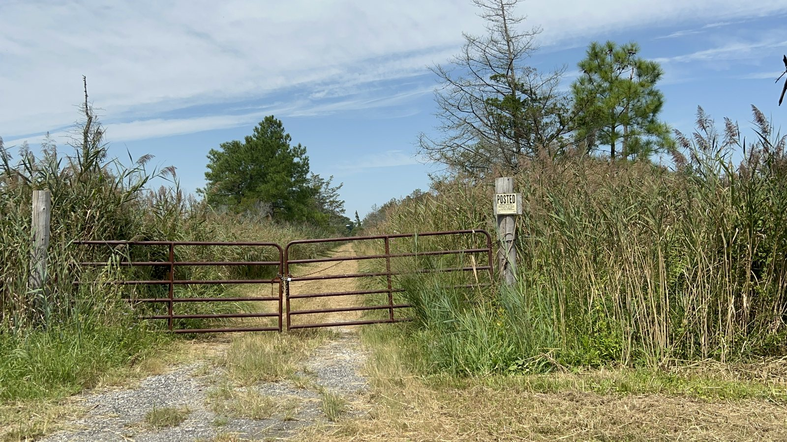
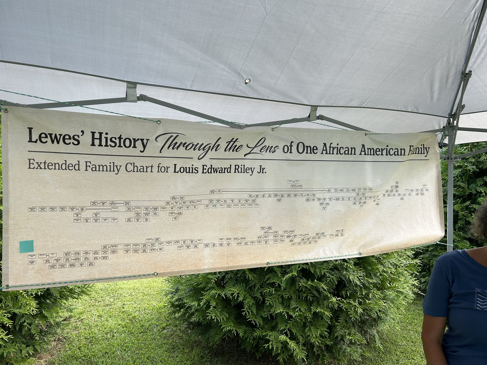
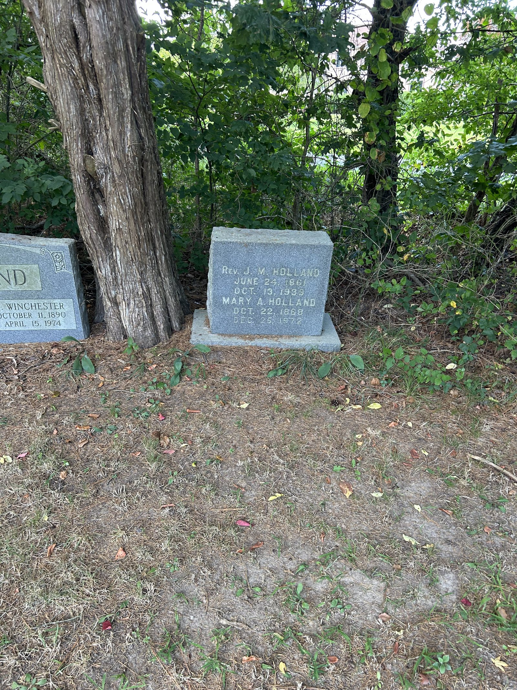

The farm where the family lived, and the road that runs past it off US Route 1, are both still named Oysterrocks — a name that points to a business the family was built on for well over a century.
Basic premise
Oyster harvesting was a primary livelihood in the Mid-Atlantic region throughout the 1800s, and the Hollands of Oysterrocks were heavily involved in it — as watermen, boatmen, and shuckers working the Broadkill River and the wider Delaware Bay.
By the early-to-mid 19th century, Sussex County had a significant free Black population — by 1860, nearly 20% of Delaware's Black population was free. Many worked as watermen, fishermen, and oyster harvesters along the Indian River, the Broadkill River, and Assawoman Bay, using canoes, bateaux, and small rowboats to rake clams, dig oysters, and catch shad and herring. The 1860 census lists dozens of free Black sailors and boatmen in towns like Milton, Lewes, Seaford, Laurel, and Milford.
Maritime work offered something land work often didn't: it required skill more than land ownership, allowed a degree of independence from white landowners, and could be entered with relatively little capital.
Through the 19th century, the Chesapeake and Delaware Bay oyster industry exploded into one of the largest seafood industries in the country. By 1860, oysters were valuable enough to be nicknamed "white gold." African Americans were heavily involved — as oystermen tonging and dredging the beds, as boatmen and dock laborers ferrying the catch, and as shuckers in the seasonal packing houses that shipped oysters north to Philadelphia and New York. Working the water was, for a time, one of the best-paying kinds of work open to Black men in the region.

For years, Wendell Holland writes, the family assumed the Hollands of Oysterrocks were "largely tobacco slaves." But the family was, quite literally, surrounded by the oyster business: Oysterrocks Road was one of the convenient access points to the Broadkill River, a well-traveled route to the Delaware Bay and on to Philadelphia and New York. Family stories carry the texture of that life — grandma Mary Holland tied to the mast of her boat by her husband during a wicked storm; a fishing and oystering trade worked for generations.
Not all of those stories end well. On or about March 10, 1912, Cornelius Holland and his son, Solomon, were coming into port after a long day of oystering and fishing when the front of their boat began to sink. Their high fishing boots filled with water and pulled them under. The Milton newspaper reported the drowning at the time, and the story has been passed down in the family since — a reminder that the same river that gave the family its livelihood asked a real price for it.
Black maritime workers on the Delaware Bay moved constantly between ports and bays, and in doing so built informal communication networks across the water. Historical accounts suggest these networks — small boats that could move quietly along creeks and wetlands — sometimes supported Underground Railroad activity in the region, including operations associated with Harriet Tubman.
Despite their importance to the industry, Black oystermen faced real disadvantages: limited access to capital for boats or dredging equipment, discrimination from packing houses and buyers who sometimes refused Black fishermen's catches or paid them last, and segregated living and working conditions. Delaware saw less of the overt violence documented on Maryland's Eastern Shore, but economic and social segregation persisted well into the 20th century, even as the oyster industry itself became more industrialized and increasingly dominated by large white-owned operations.
Small Black communities tied to the water existed around Lewes, Milton, the Indian River area, and along the tidal rivers near Seaford and Laurel — families who combined fishing, oystering, farming, and boat work, often across generations. Documented free Black families with strong maritime ties in Sussex County include the Sockum, Jacobs, Harmon, Cornish, Parkinson, Gurley, and Tingle families — some of whom, like the Harmons, were close with the Hollands: Chubb (Jeremiah) Holland and his sons Jerry and Wendell were childhood friends with the Harmon children.
Oral History
On February 17, 2022, Lewis Edward Riley — a Lewes native connected to the Holland family's circle — shared his own recollections of growing up on the water in a talk documented for the family archive. His account puts a first-person voice to the same maritime world the Hollands worked.


Most of my life was spent on the water and the canal. My uncle had a commercial fishing boat, and of course I was too young to go out on it, but when the boat came in with the nets I'd have to hang up the gill nets… myself and Timmy and Kenny Booker would take the trout they wouldn't sell around the neighborhood on a wagon to give away. Lewis Riley, oral history, February 17, 2022
Apparently my father was a muskrat hunter — I know because when I dig in the backyard I'll still find a muskrat trap. And your father and your uncle, they worked the boats — they were firemen on those old fishing boats years ago. Lewis Riley, oral history, February 17, 2022
The Historical Society discovered I'm related to twenty-nine people in the old cemetery — not counting all the others. It's been one of the best years, almost as if I'm reborn — such pride in knowing about my family. Lewis Riley, oral history, February 17, 2022
Sources: "Black Aqua Culture in Lewes, DE," as told by Lewis Riley, February 17, 2022; "Oyster Business, Sussex County, DE — 1800s" and "The Hollands of Oysterrocks," both by Hon. Wendell F. Holland.